Note
Click here to download the full example code
Wavelet Transform
This tutorial covers the use of nap.compute_wavelet_transform to do continuous wavelet transform. By default, pynapple uses Morlet wavelets.
Wavelet are a great tool for capturing changes of spectral characteristics of a signal over time. As neural signals change and develop over time, wavelet decompositions can aid both visualization and analysis.
The function nap.generate_morlet_filterbank can help parametrize and visualize the Morlet wavelets.
See the documentation of Pynapple for instructions on installing the package.
This tutorial was made by Kipp Freud.
Warning
This tutorial uses matplotlib for displaying the figure
You can install all with pip install matplotlib requests tqdm seaborn
mkdocs_gallery_thumbnail_number = 9
Now, import the necessary libraries:
import matplotlib.pyplot as plt
import numpy as np
import seaborn
seaborn.set_theme()
import pynapple as nap
Generating a Dummy Signal
Let's generate a dummy signal to analyse with wavelets!
Our dummy dataset will contain two components, a low frequency 2Hz sinusoid combined with a sinusoid which increases frequency from 5 to 15 Hz throughout the signal.
Fs = 2000
t = np.linspace(0, 5, Fs * 5)
two_hz_phase = t * 2 * np.pi * 2
two_hz_component = np.sin(two_hz_phase)
increasing_freq_component = np.sin(t * (5 + t) * np.pi * 2)
sig = nap.Tsd(
d=two_hz_component + increasing_freq_component + np.random.normal(0, 0.1, 10000),
t=t,
)
Lets plot it.
fig, ax = plt.subplots(3, constrained_layout=True, figsize=(10, 5))
ax[0].plot(t, two_hz_component)
ax[0].set_title("2Hz Component")
ax[1].plot(t, increasing_freq_component)
ax[1].set_title("Increasing Frequency Component")
ax[2].plot(sig)
ax[2].set_title("Dummy Signal")
[ax[i].margins(0) for i in range(3)]
[ax[i].set_ylim(-2.5, 2.5) for i in range(3)]
[ax[i].set_xlabel("Time (s)") for i in range(3)]
[ax[i].set_ylabel("Signal") for i in range(3)]
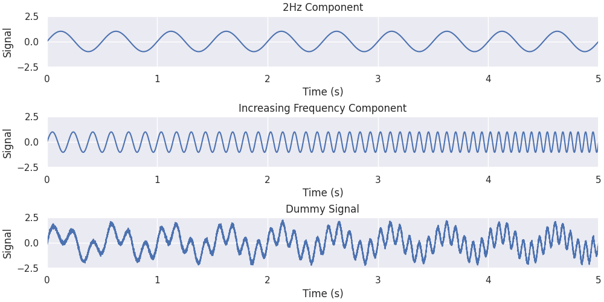
Out:
Getting our Morlet Wavelet Filter Bank
We will be decomposing our dummy signal using wavelets of different frequencies. These wavelets
can be examined using the generate_morlet_filterbank function. Here we will use the default parameters
to define a Morlet filter bank with which we will later use to deconstruct the signal.
# Define the frequency of the wavelets in our filter bank
freqs = np.linspace(1, 25, num=25)
# Get the filter bank
filter_bank = nap.generate_morlet_filterbank(
freqs, Fs, gaussian_width=1.5, window_length=1.0
)
Lets plot it some of the wavelets.
def plot_filterbank(filter_bank, freqs, title):
fig, ax = plt.subplots(1, constrained_layout=True, figsize=(10, 7))
for f_i in range(filter_bank.shape[1]):
ax.plot(filter_bank[:, f_i].real() + f_i * 1.5)
ax.text(-5.5, 1.5 * f_i, f"{np.round(freqs[f_i], 2)}Hz", va="center", ha="left")
ax.set_yticks([])
ax.set_xlim(-5, 5)
ax.set_xlabel("Time (s)")
ax.set_title(title)
title = "Morlet Wavelet Filter Bank (Real Components): gaussian_width=1.5, window_length=1.0"
plot_filterbank(filter_bank, freqs, title)
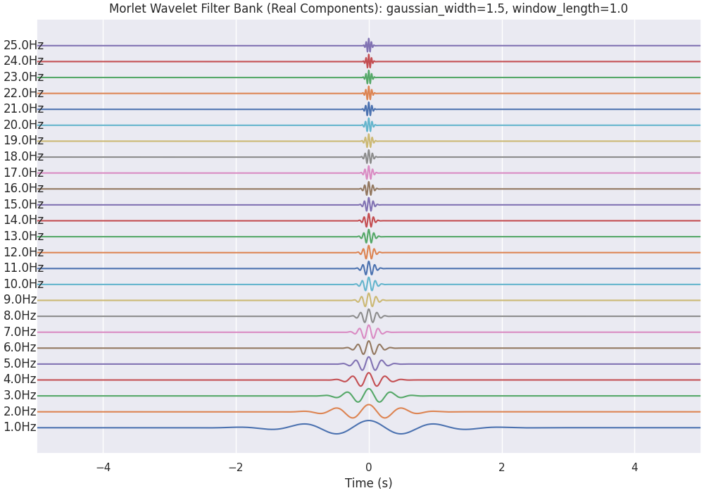
Continuous wavelet transform
Here we will use the compute_wavelet_transform function to decompose our signal using the filter bank shown
above. Wavelet decomposition breaks down a signal into its constituent wavelets, capturing both time and
frequency information for analysis. We will calculate this decomposition and plot it's corresponding
scalogram (which is another name for time frequency decomposition using wavelets).
# Compute the wavelet transform using the parameters above
mwt = nap.compute_wavelet_transform(
sig, fs=Fs, freqs=freqs, gaussian_width=1.5, window_length=1.0
)
mwt for Morlet wavelet transform is a TsdFrame. Each column is the result of the convolution of the signal with one wavelet.
Out:
Time (s) 0 1 2 3 4 ...
---------- ---------- ---------- ---------- --------- --------- -----
0.0 0.0968536 0.0780045 -0.0615102 0.118847 0.0277554 ...
0.00050005 0.096858 0.0803107 -0.0609647 0.120559 0.0336133 ...
0.0010001 0.0968611 0.0826167 -0.0604169 0.122248 0.039481 ...
0.00150015 0.0968639 0.0849232 -0.0598687 0.123914 0.045361 ...
...
4.99849985 -0.0806921 -0.0498048 0.143395 0.059317 0.0194924 ...
4.9989999 -0.080695 -0.047491 0.143848 0.0594073 0.0195605 ...
4.99949995 -0.0806974 -0.0451801 0.14429 0.0594911 0.0196295 ...
5.0 -0.0806983 -0.0428705 0.144721 0.0595654 0.0196927 ...
dtype: complex128, shape: (10000, 25)
Lets plot it.
def plot_timefrequency(freqs, powers, ax=None):
im = ax.imshow(np.abs(powers), aspect="auto")
ax.invert_yaxis()
ax.set_xlabel("Time (s)")
ax.set_ylabel("Frequency (Hz)")
ax.get_xaxis().set_visible(False)
ax.set(yticks=[np.argmin(np.abs(freqs - val)) for val in freqs], yticklabels=freqs)
ax.grid(False)
return im
fig = plt.figure(constrained_layout=True, figsize=(10, 6))
fig.suptitle("Wavelet Decomposition")
gs = plt.GridSpec(2, 1, figure=fig, height_ratios=[1.0, 0.3])
ax0 = plt.subplot(gs[0, 0])
im = plot_timefrequency(freqs[:], np.transpose(mwt[:, :].values), ax=ax0)
cbar = fig.colorbar(im, ax=ax0, orientation="vertical")
ax1 = plt.subplot(gs[1, 0])
ax1.plot(sig)
ax1.set_ylabel("Signal")
ax1.set_xlabel("Time (s)")
ax1.margins(0)
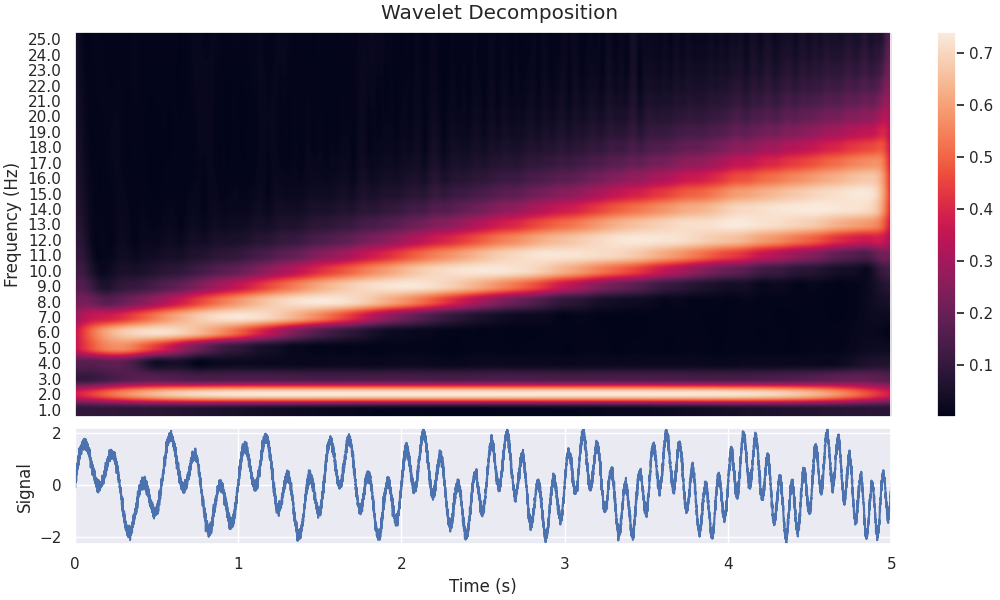
Reconstructing the Slow Oscillation and Phase
We can see that the decomposition has picked up on the 2Hz component of the signal, as well as the component with increasing frequency. In this section, we will extract just the 2Hz component from the wavelet decomposition, and see how it compares to the original section.
# Get the index of the 2Hz frequency
two_hz_freq_idx = np.where(freqs == 2.0)[0]
# The 2Hz component is the real component of the wavelet decomposition at this index
slow_oscillation = np.real(mwt[:, two_hz_freq_idx])
# The 2Hz wavelet phase is the angle of the wavelet decomposition at this index
slow_oscillation_phase = np.angle(mwt[:, two_hz_freq_idx])
Lets plot it.
fig = plt.figure(constrained_layout=True, figsize=(10, 4))
axd = fig.subplot_mosaic(
[["signal"], ["phase"]],
height_ratios=[1, 0.4],
)
axd["signal"].plot(sig, label="Raw Signal", alpha=0.5)
axd["signal"].plot(slow_oscillation, label="2Hz Reconstruction")
axd["signal"].legend()
axd["signal"].set_ylabel("Signal")
axd["phase"].plot(slow_oscillation_phase, alpha=0.5)
axd["phase"].set_ylabel("Phase (rad)")
axd["phase"].set_xlabel("Time (s)")
[axd[k].margins(0) for k in ["signal", "phase"]]
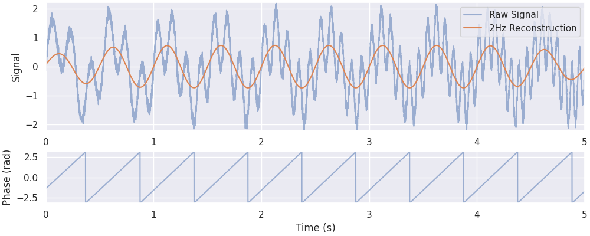
Out:
Adding in the 15Hz Oscillation
Let's see what happens if we also add the 15 Hz component of the wavelet decomposition to the reconstruction. We will extract the 15 Hz components, and also the 15Hz wavelet power over time. The wavelet power tells us to what extent the 15 Hz frequency is present in our signal at different times.
Finally, we will add this 15 Hz reconstruction to the one shown above, to see if it improves out reconstructed signal.
# Get the index of the 15 Hz frequency
fifteen_hz_freq_idx = np.where(freqs == 15.0)[0]
# The 15 Hz component is the real component of the wavelet decomposition at this index
fifteenHz_oscillation = np.real(mwt[:, fifteen_hz_freq_idx])
# The 15 Hz poser is the absolute value of the wavelet decomposition at this index
fifteenHz_oscillation_power = np.abs(mwt[:, fifteen_hz_freq_idx])
Lets plot it.
fig = plt.figure(constrained_layout=True, figsize=(10, 4))
gs = plt.GridSpec(2, 1, figure=fig, height_ratios=[1.0, 1.0])
ax0 = plt.subplot(gs[0, 0])
ax0.plot(fifteenHz_oscillation, label="15Hz Reconstruction")
ax0.plot(fifteenHz_oscillation_power, label="15Hz Power")
ax0.set_xticklabels([])
ax1 = plt.subplot(gs[1, 0])
ax1.plot(sig, label="Raw Signal", alpha=0.5)
ax1.plot(
slow_oscillation + fifteenHz_oscillation.values, label="2Hz + 15Hz Reconstruction"
)
ax1.set_xlabel("Time (s)")
[
(a.margins(0), a.legend(), a.set_ylim(-2.5, 2.5), a.set_ylabel("Signal"))
for a in [ax0, ax1]
]
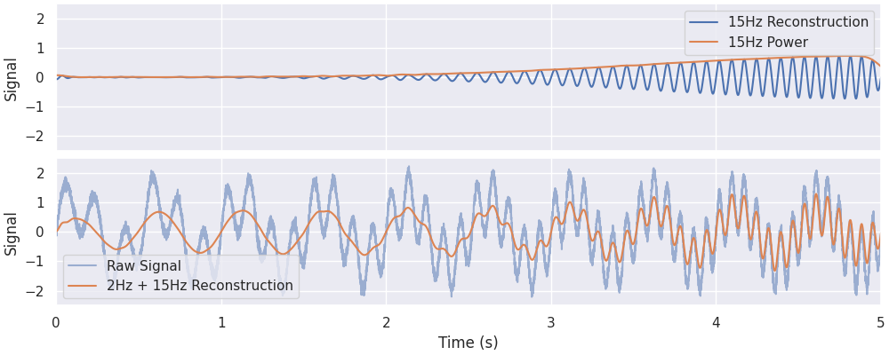
Out:
[(None, <matplotlib.legend.Legend object at 0x7f2954fb5290>, (-2.5, 2.5), Text(22.167, 0.5, 'Signal')), (None, <matplotlib.legend.Legend object at 0x7f2950f13690>, (-2.5, 2.5), Text(22.167, 0.5, 'Signal'))]
Adding ALL the Oscillations!
We will now learn how to interpret the parameters of the wavelet, and in particular how to trade off the accuracy in the frequency decomposition with the accuracy in the time domain reconstruction;
# Up to this point we have used default wavelet and normalization parameters.
#
# Let's now add together the real components of all frequency bands to recreate a version of the original signal.
combined_oscillations = np.real(np.sum(mwt, axis=1))
Lets plot it.
fig, ax = plt.subplots(1, constrained_layout=True, figsize=(10, 4))
ax.plot(sig, alpha=0.5, label="Signal")
ax.plot(combined_oscillations, label="Wavelet Reconstruction", alpha=0.5)
ax.set_xlabel("Time (s)")
ax.set_ylabel("Signal")
ax.set_title("Wavelet Reconstruction of Signal")
ax.set_ylim(-6, 6)
ax.margins(0)
ax.legend()
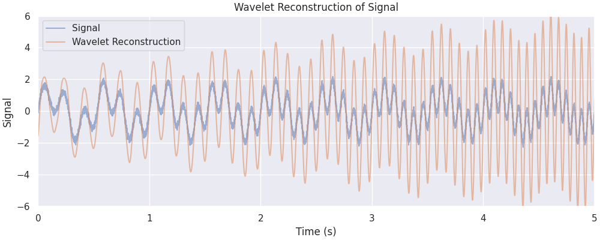
Out:
Parametrization
Our reconstruction seems to get the amplitude modulations of our signal correct, but the amplitude is overestimated, in particular towards the end of the time period. Often, this is due to a suboptimal choice of parameters, which can lead to a low spatial or temporal resolution. Let's visualize what changing our parameters does to the underlying wavelets.
window_lengths = [1.0, 3.0]
gaussian_widths = [1.0, 3.0]
colors = np.array([["r", "g"], ["b", "y"]])
fig, ax = plt.subplots(
len(window_lengths) + 1,
len(gaussian_widths) + 1,
constrained_layout=True,
figsize=(10, 8),
)
for row_i, wl in enumerate(window_lengths):
for col_i, gw in enumerate(gaussian_widths):
wavelet = nap.generate_morlet_filterbank(
np.array([1.0]), 1000, gaussian_width=gw, window_length=wl, precision=12
)[:, 0].real()
ax[row_i, col_i].plot(wavelet, c=colors[row_i, col_i])
fft = nap.compute_power_spectral_density(wavelet)
for i, j in [(row_i, -1), (-1, col_i)]:
ax[i, j].plot(fft.abs(), c=colors[row_i, col_i])
for i in range(len(window_lengths)):
for j in range(len(gaussian_widths)):
ax[i, j].set(xlabel="Time (s)", yticks=[])
for ci, gw in enumerate(gaussian_widths):
ax[0, ci].set_title(f"gaussian_width={gw}", fontsize=10)
for ri, wl in enumerate(window_lengths):
ax[ri, 0].set_ylabel(f"window_length={wl}", fontsize=10)
fig.suptitle("Parametrization Visualization (1 Hz Wavelet)")
ax[-1, -1].set_visible(False)
for i in range(len(window_lengths)):
ax[-1, i].set(
xlim=(0, 2), yticks=[], ylabel="Frequency Response", xlabel="Frequency (Hz)"
)
for i in range(len(gaussian_widths)):
ax[i, -1].set(
xlim=(0, 2), yticks=[], ylabel="Frequency Response", xlabel="Frequency (Hz)"
)
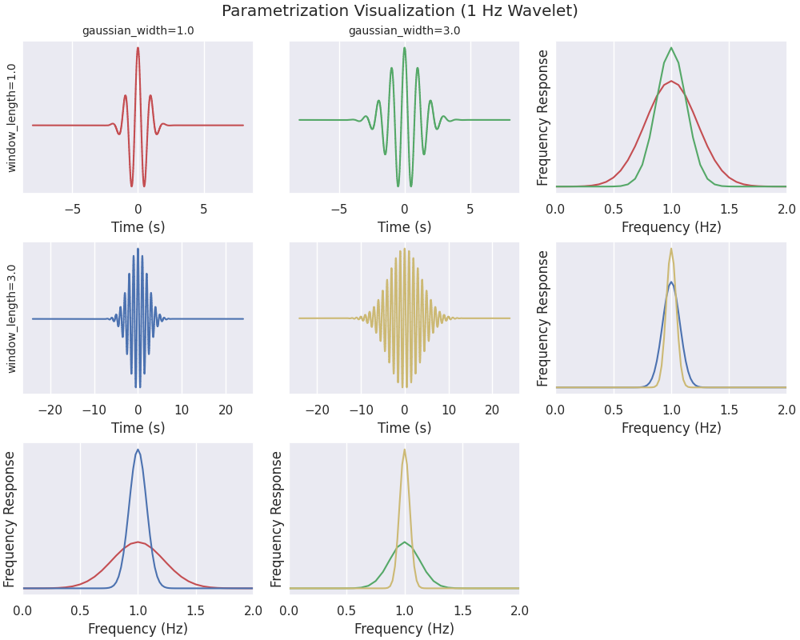
Increasing window_length increases the number of wavelet cycles present in the oscillations (cycles), and
correspondingly increases the time window that the wavelet covers.
The gaussian_width parameter determines the shape of the gaussian window being convolved with the sinusoidal
component of the wavelet
Both of these parameters can be tweaked to control for the trade-off between time resolution and frequency resolution.
Effect of gaussian_width
Let's increase gaussian_width to 7.5 and see the effect on the resultant filter bank.
freqs = np.linspace(1, 25, num=25)
filter_bank = nap.generate_morlet_filterbank(
freqs, 1000, gaussian_width=7.5, window_length=1.0
)
plot_filterbank(
filter_bank,
freqs,
"Morlet Wavelet Filter Bank (Real Components): gaussian_width=7.5, center_frequency=1.0",
)
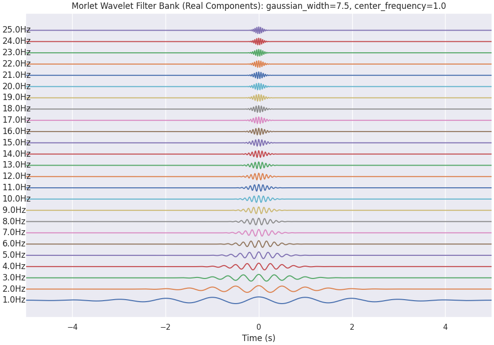
Let's see what effect this has on the Wavelet Scalogram which is generated...
mwt = nap.compute_wavelet_transform(
sig, fs=Fs, freqs=freqs, gaussian_width=7.5, window_length=1.0
)
fig = plt.figure(constrained_layout=True, figsize=(10, 6))
fig.suptitle("Wavelet Decomposition")
gs = plt.GridSpec(2, 1, figure=fig, height_ratios=[1.0, 0.3])
ax0 = plt.subplot(gs[0, 0])
im = plot_timefrequency(freqs[:], np.transpose(mwt[:, :].values), ax=ax0)
cbar = fig.colorbar(im, ax=ax0, orientation="vertical")
ax1 = plt.subplot(gs[1, 0])
ax1.plot(sig)
ax1.set_ylabel("Signal")
ax1.set_xlabel("Time (s)")
ax1.margins(0)
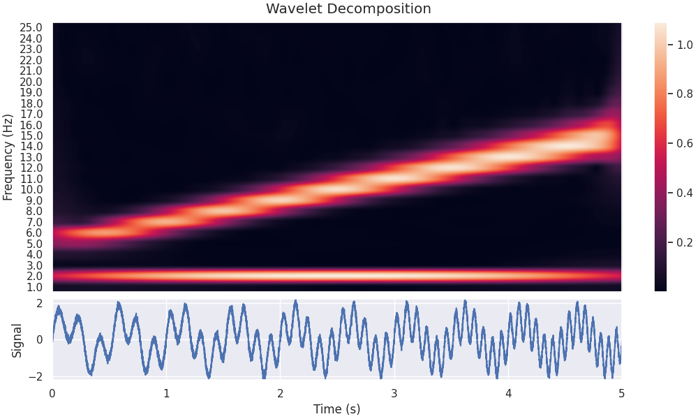
And let's see if that has an effect on the reconstructed version of the signal
Lets plot it.
fig, ax = plt.subplots(1, constrained_layout=True, figsize=(10, 4))
ax.plot(sig, alpha=0.5, label="Signal")
ax.plot(t, combined_oscillations, label="Wavelet Reconstruction", alpha=0.5)
[ax.spines[sp].set_visible(False) for sp in ["right", "top"]]
ax.set_xlabel("Time (s)")
ax.set_ylabel("Signal")
ax.set_title("Wavelet Reconstruction of Signal")
ax.set_ylim(-6, 6)
ax.margins(0)
ax.legend()
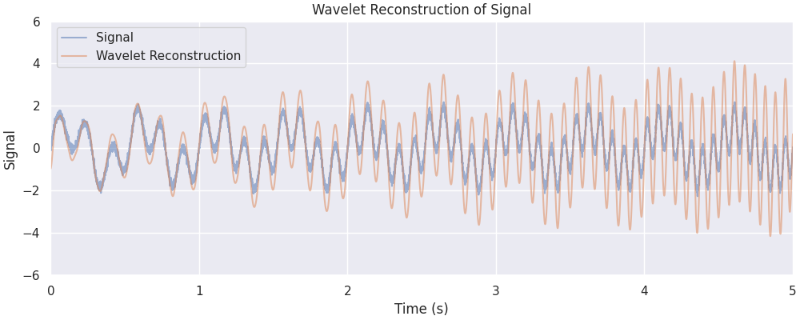
Out:
There's a small improvement, but perhaps we can do better.
Effect of window_length
Let's increase window_length to 2.0 and see the effect on the resultant filter bank.
freqs = np.linspace(1, 25, num=25)
filter_bank = nap.generate_morlet_filterbank(
freqs, 1000, gaussian_width=7.5, window_length=2.0
)
plot_filterbank(
filter_bank,
freqs,
"Morlet Wavelet Filter Bank (Real Components): gaussian_width=7.5, center_frequency=2.0",
)
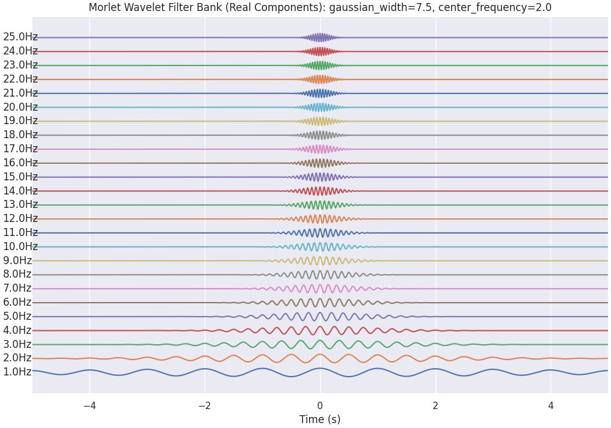
Let's see what effect this has on the Wavelet Scalogram which is generated...
mwt = nap.compute_wavelet_transform(
sig, fs=Fs, freqs=freqs, gaussian_width=7.5, window_length=2.0
)
fig = plt.figure(constrained_layout=True, figsize=(10, 6))
fig.suptitle("Wavelet Decomposition")
gs = plt.GridSpec(2, 1, figure=fig, height_ratios=[1.0, 0.3])
ax0 = plt.subplot(gs[0, 0])
im = plot_timefrequency(freqs[:], np.transpose(mwt[:, :].values), ax=ax0)
cbar = fig.colorbar(im, ax=ax0, orientation="vertical")
ax1 = plt.subplot(gs[1, 0])
ax1.plot(sig)
ax1.set_ylabel("Signal")
ax1.set_xlabel("Time (s)")
ax1.margins(0)
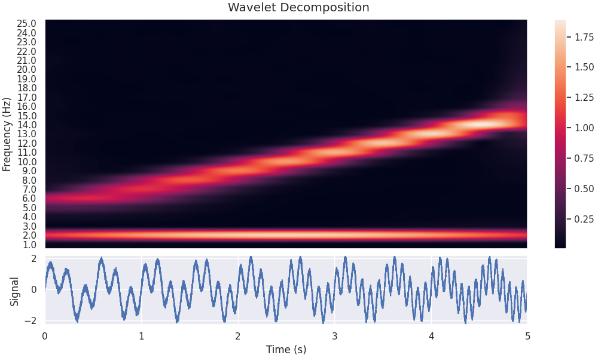
And let's see if that has an effect on the reconstructed version of the signal
Lets plot it.
fig, ax = plt.subplots(1, constrained_layout=True, figsize=(10, 4))
ax.plot(sig, alpha=0.5, label="Signal")
ax.plot(combined_oscillations, label="Wavelet Reconstruction", alpha=0.5)
ax.set_xlabel("Time (s)")
ax.set_ylabel("Signal")
ax.set_title("Wavelet Reconstruction of Signal")
ax.margins(0)
ax.set_ylim(-6, 6)
ax.legend()
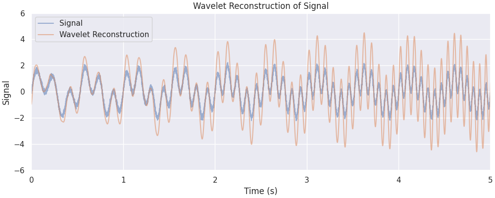
Out:
Effect of L1 vs L2 normalization
compute_wavelet_transform contains two options for normalization; L1, and L2.
By default, L1 is used as it creates cleaner looking decomposition images.
L1 normalization often increases the contrast between significant and insignificant coefficients. This can result in a sharper and more defined visual representation, making patterns and structures within the signal more evident.
L2 normalization is directly related to the energy of the signal. By normalizing using the L2 norm, you ensure that the transformed coefficients preserve the energy distribution of the original signal.
Let's compare two wavelet decomposition, each generated with a different normalization strategy
mwt_l1 = nap.compute_wavelet_transform(
sig, fs=Fs, freqs=freqs, gaussian_width=7.5, window_length=2.0, norm="l1"
)
mwt_l2 = nap.compute_wavelet_transform(
sig, fs=Fs, freqs=freqs, gaussian_width=7.5, window_length=2.0, norm="l2"
)
Let's plot both the scalograms and see the difference.
fig = plt.figure(constrained_layout=True, figsize=(10, 6))
fig.suptitle("Wavelet Decomposition - L1 Normalization")
gs = plt.GridSpec(2, 1, figure=fig, height_ratios=[1.0, 0.3])
ax0 = plt.subplot(gs[0, 0])
im = plot_timefrequency(freqs[:], np.transpose(mwt_l1[:, :].values), ax=ax0)
cbar = fig.colorbar(im, ax=ax0, orientation="vertical")
ax1 = plt.subplot(gs[1, 0])
ax1.plot(sig)
ax1.set_ylabel("Signal")
ax1.set_xlabel("Time (s)")
ax1.margins(0)
fig = plt.figure(constrained_layout=True, figsize=(10, 6))
fig.suptitle("Wavelet Decomposition - L2 Normalization")
gs = plt.GridSpec(2, 1, figure=fig, height_ratios=[1.0, 0.3])
ax0 = plt.subplot(gs[0, 0])
im = plot_timefrequency(freqs[:], np.transpose(mwt_l2[:, :].values), ax=ax0)
cbar = fig.colorbar(im, ax=ax0, orientation="vertical")
ax1 = plt.subplot(gs[1, 0])
ax1.plot(sig)
ax1.set_ylabel("Signal")
ax1.set_xlabel("Time (s)")
ax1.margins(0)
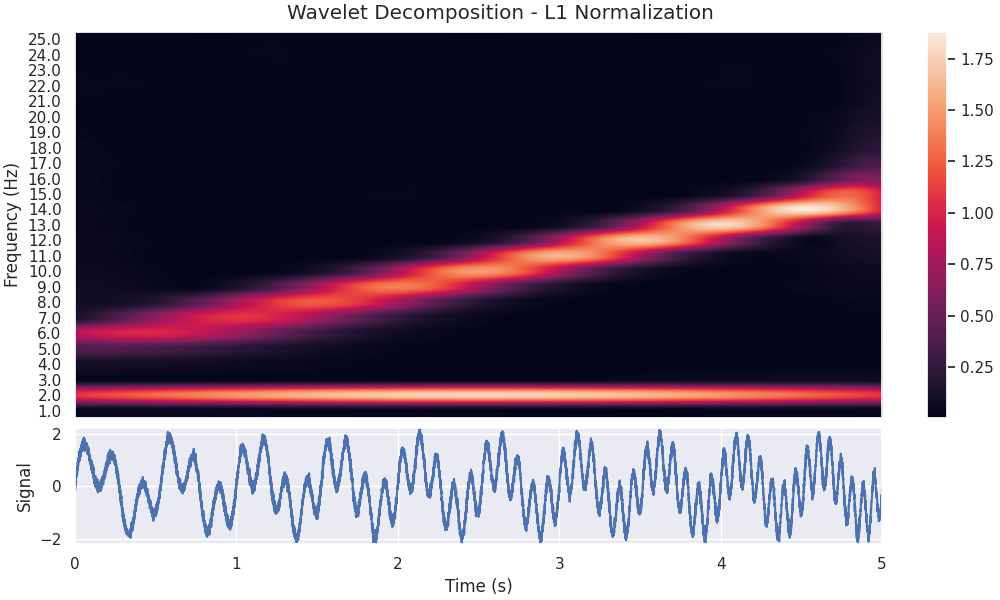
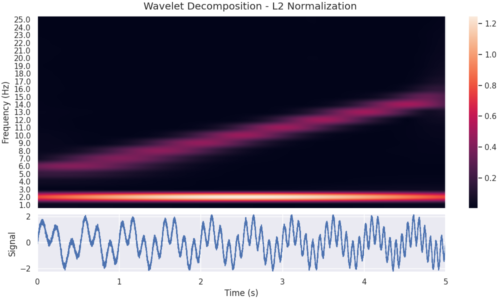
We see that the l1 normalized image contains a visually clearer image; the 5-15 Hz component of the signal is as powerful as the 2 Hz component, so it makes sense that they should be shown with the same power in the scalogram. Let's reconstruct the signal using both decompositions and see the resulting reconstruction...
combined_oscillations_l1 = np.real(np.sum(mwt_l1, axis=1))
combined_oscillations_l2 = np.real(np.sum(mwt_l2, axis=1))
Lets plot it.
fig, ax = plt.subplots(1, constrained_layout=True, figsize=(10, 4))
ax.plot(sig, label="Signal", linewidth=3, alpha=0.6, c="b")
ax.plot(combined_oscillations_l1, label="Wavelet Reconstruction (L1)", c="g", alpha=0.6)
ax.plot(combined_oscillations_l2, label="Wavelet Reconstruction (L2)", c="r", alpha=0.6)
ax.set_xlabel("Time (s)")
ax.set_ylabel("Signal")
ax.set_title("Wavelet Reconstruction of Signal")
ax.margins(0)
ax.set_ylim(-6, 6)
ax.legend()
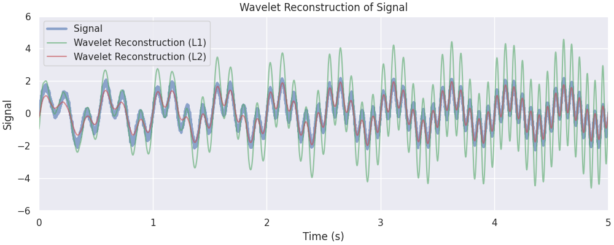
Out:
We see that the reconstruction from the L2 normalized decomposition matched the original signal much more closely, this is due to the fact that L2 normalization preserved the energy of the original signal in its reconstruction.
Total running time of the script: ( 0 minutes 6.194 seconds)
Download Python source code: tutorial_pynapple_wavelets.py